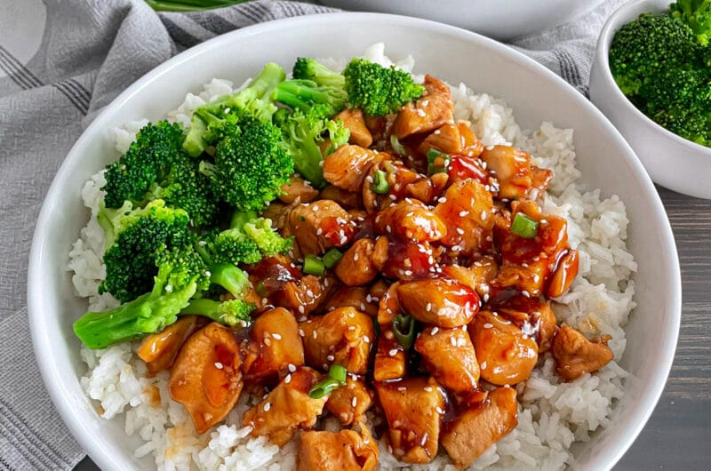

Teriyaki Chicken and Rice

Teriyaki Chicken and Rice Bowl
A delicious dinner for the family on your busy weeknights! This Teriyaki Chicken Rice Bowl is made up of chicken, teriyaki sauce, and fresh vegetables. A fast and tasty dish that will be ready in less than 30 minutes.
Ingredients
- Boneless Skinless Chicken Breasts: I prefer to use chicken breasts, but you can also use chicken thighs.
- Olive Oil: I like to use extra virgin olive oil for the health benefits, but you can also use vegetable oil.
- Low Sodium Soy Sauce: Low sodium soy sauce will cut down on the salt content in this recipe.
- Water: for the teriyaki sauce
- Brown Sugar: Adds a sweetness to the sauce. You can use light or dark brown sugar.
- Rice Vinegar: Is commonly used in Asian dishes.
- Sesame Oil: Adds a great flavor to the sauce, but this is also optional.
- Minced Garlic: I prefer to use fresh minced garlic over garlic powder.
- Ginger: Ground ginger works great in this teriyaki sauce. It’s easy to use and most people have it on hand.
- Honey: Adds a sweet flavor to the sauce, and also helps to thicken the sauce.
- Cornstarch: Adding cornstarch to the teriyaki sauce with thicken the sauce to coat the chicken.
- Rice for serving: Use white rice, brown rice, or quinoa.
- Vegetables for serving: Fresh steamed carrots and broccoli compliment this chicken great.
Steps
- Start by heating oil in a large skillet over medium-high heat and add cubed chicken.
- Brown Chicken until it is cooked through and no longer pink in the middle. Drain excess liquid if any.
- While Chicken is browning, prepare your teriyaki sauce! In a medium size mixing bowl whisk together soy sauce, water, honey, brown sugar, rice vinegar, sesame oil, ginger, garlic, and cornstarch.
- Once Chicken is browned and cooked through, add your homemade teriyaki sauce to your skillet and continue to cook stirring until the sauce has thickened.
- Serve immediately with white or brown rice and vegetables of your choice. Garnish with sesame seeds and green onion
- If you like extra teriyaki sauce with your meal, make extra to drizzle on top of your rice bowl